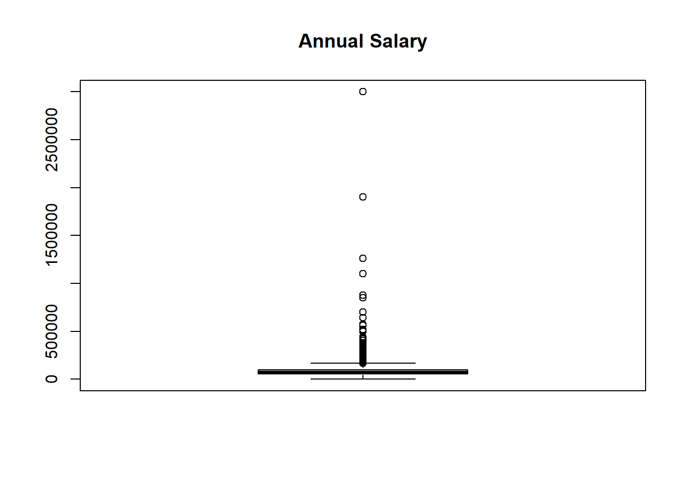
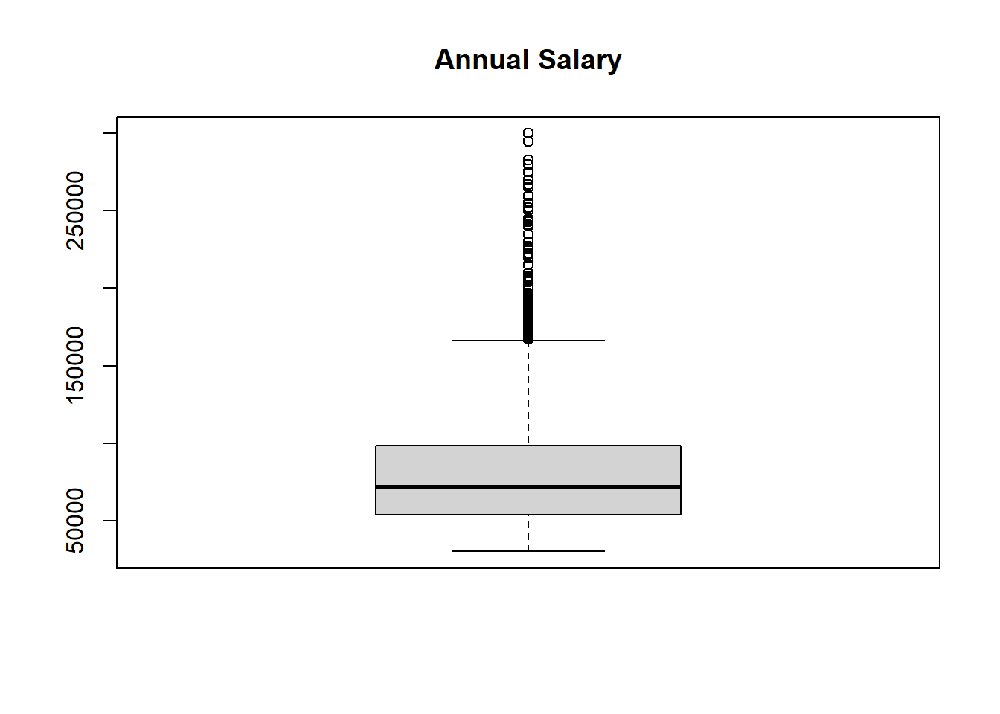

setwd("E:/UM/STATS 506/Repos/STATS506-Problem-Set-1")# Assigning column names for the data framecolNames <-c("wineClass","alcohol","malicAcid","ash","alcalinityOfAsh","magnesium","totalPhenols","flavanoids","nonflavanoidPhenols","proanthocyanins","colorIntensity","hue","odOfDilutedWines","proline")# Importing the data setwine <-read.table("data/wine.data", sep =",", col.names = colNames)# Checking number of data samples for each class of wineclassCount <-table(wine$wineClass)print(classCount)
1 2 3
59 71 48
The number of data samples for each class of wine are the same as mentioned in the wine.names file.
# Calculating correlation of alcohol content and color intensitycorRel <-cor(wine$alcohol, wine$colorIntensity)print(corRel)
[1] 0.5463642
The correlation coefficient (r) between alcohol content and color intensity of wine is 0.5463642. As r is positive, we can say that there is a positive correlation, i.e. if one variable increases, the other also increases.
# Spliting the data frame based on wine classes# This returns a list of 3 lists grouped on the 3 wine classessplitWine <-split(wine, wine$wineClass)
Attribution of Source: Asked UM GPT to suggest ways to split dataset by groups to enable me to apply correlation function to each.
# Using lapply to calculate correlation between alcohol and color intensity for each list generated above.#' Anonymous function to calculate correlation#' @param splitWineList list (subset of the original dataset) containing samples of same class #' @return correlation coefficient between alcohol and color intensity from data in the given listcorRelByClass <-lapply(splitWine, function(splitWineList) {return(cor(splitWineList$alcohol, splitWineList$colorIntensity))})print(corRelByClass)
From the output, we can observe that class 1 of wine has the highest correlation while class 2 has the lowest correlation between alcohol content and color intensity.
# Finding the index of row with highest value of color intensitymaxColorIntensityIndex <-which.max(wine$colorIntensity)# Using the index to get corresponding alcohol content valueprint(wine$alcohol[maxColorIntensityIndex])
[1] 14.34
The alcohol content of the sample of wine with the highest color index is 14.34.
# Counting the number of samples where proanthocyanins > ashcounter =0for (i in1:nrow(wine)) {if (wine$proanthocyanins[i] > wine$ash[i]) { counter <- counter +1 }}# Calculating the percentagepercentageWine <- (counter /nrow(wine)) *100print(percentageWine)
[1] 8.426966
Therefore, approximately 8.43% of the samples have more proanthocyanins than ash.
# Calculating average of each variable except wineClassoverallAverage <-colMeans(wine[, -1])# Converting above obtained vector into a dataframeoverallAverageDf <-as.data.frame(t(overallAverage), row.names ="Overall")# Calculating average of each variable grouped by wineClassgroupAverage <-aggregate(. ~ wineClass, wine, mean)# Removing the wineClass column from the data framegroupAverage <- groupAverage[, -1]# Binding row-wise, the two dataframes obtained aboveaveragesTable <-rbind(overallAverageDf, groupAverage)
Attribution of Source: Asked UM GPT to suggest ways to get average of all variables by group and for ways to combine and display the table of averages.
The table above lists the overall as well group-wise averages for each variable.
# Using the splitWine list created above to extract values of total phenol for each class# Pairwise t-test on class 1 and class 2test12 <-t.test(splitWine[[1]]$totalPhenols, splitWine[[2]]$totalPhenols)print(test12)
Welch Two Sample t-test
data: splitWine[[1]]$totalPhenols and splitWine[[2]]$totalPhenols
t = 7.4206, df = 119.14, p-value = 1.889e-11
alternative hypothesis: true difference in means is not equal to 0
95 percent confidence interval:
0.4261870 0.7364055
sample estimates:
mean of x mean of y
2.840169 2.258873
# Pairwise t-test on class 1 and class 3test13 <-t.test(splitWine[[1]]$totalPhenols, splitWine[[3]]$totalPhenols)print(test13)
Welch Two Sample t-test
data: splitWine[[1]]$totalPhenols and splitWine[[3]]$totalPhenols
t = 17.12, df = 98.356, p-value < 2.2e-16
alternative hypothesis: true difference in means is not equal to 0
95 percent confidence interval:
1.026801 1.296038
sample estimates:
mean of x mean of y
2.840169 1.678750
# Pairwise t-test on class 2 and class 3test23 <-t.test(splitWine[[2]]$totalPhenols, splitWine[[3]]$totalPhenols)print(test23)
Welch Two Sample t-test
data: splitWine[[2]]$totalPhenols and splitWine[[3]]$totalPhenols
t = 7.0125, df = 116.91, p-value = 1.622e-10
alternative hypothesis: true difference in means is not equal to 0
95 percent confidence interval:
0.4162855 0.7439610
sample estimates:
mean of x mean of y
2.258873 1.678750
Attribution of Source: Asked UM GPT for inbuilt function to calculate t-test.
Problem 2 - AskAManager.org Data
# Importing datasalary =read.csv("data/AskAManager.csv")# Re-assigning names to columnsnames(salary) <-c("index","timestamp","age","industry","jobTitle","jobDescription","annualSalary","bonus","currency","otherCurrency","additionalDescription","country","state","city","overallExperience","fieldExperience","levelOfEducation","gender","race")print(names(salary))
# Choosing samples that have salary in USDsalaryRestricted <- salary[salary$currency =="USD",]
Number of samples in restricted dataset (less than the original)
print(nrow(salaryRestricted))
[1] 23374
Cleaning based on age and experience
# Need to look at all the possible values for age, overall experience and field experienceprint(table(salaryRestricted$age))
18-24 25-34 35-44 45-54 55-64 65 or over under 18
991 10386 8323 2700 875 86 13
print(table(salaryRestricted$overallExperience))
1 year or less 11 - 20 years 2 - 4 years 21 - 30 years
410 8137 2450 3066
31 - 40 years 41 years or more 5-7 years 8 - 10 years
735 112 4016 4448
print(table(salaryRestricted$fieldExperience))
1 year or less 11 - 20 years 2 - 4 years 21 - 30 years
1180 5523 5045 1573
31 - 40 years 41 years or more 5-7 years 8 - 10 years
333 34 5460 4226
Mapping range values to numeric values for age, overall experience and field experience
#' Function to map age values given in range to minimum limit of the range in numeric format#'#' @param ageRanges takes column of age values from the dataset#'#' @return column of mapped/factored age values in numeric formatmapAge <-function(ageRanges) { ageFactors <-c("under 18"=0,"18-24"=18,"25-34"=25,"35-44"=35,"45-54"=45,"55-64"=55,"65 or over"=65 )return(as.numeric(ageFactors[ageRanges]))}#' Function to map experience values given in range to maximum limit of the range in numeric format#'#' @param experienceRanges takes column of overall or field experience values from the dataset#'#' @return column of mapped/factored experience values in numeric formatmapExperience <-function(experienceRanges) { experienceFactors <-c("1 year or less"=1,"2 - 4 years"=4,"5-7 years"=7,"8 - 10 years"=10,"11 - 20 years"=20,"21 - 30 years"=30,"31 - 40 years"=40,"41 years or more"=41 )return(as.numeric(experienceFactors[experienceRanges]))}
Attribution of Source: Asked UM GPT to suggest ways to factor character ranges to numeric values.
Number of samples in cleaned dataset (less than the restricted)
print(nrow(salaryCleaned))
[1] 7834
Visualizing salaries to understand the trends
summary(salaryCleaned$annualSalary)
Min. 1st Qu. Median Mean 3rd Qu. Max.
0 52000 70000 82387 98000 3000000
boxplot(salaryCleaned$annualSalary, main ="Annual Salary")

From summary and box plot of the annual salaries, we can identify some extreme values. Salaries equal to 0 USD might be a mistake or we might have to consider what the person has written in additional description field. Salaries as high as 3000000 USD are possible but rare. Thus it would be safe to restrict lower limit to a little less than the 1st Quartile value, say 30,000 USD and the upper limit to a bit more than the 3rd Quartile value, say 300,000 USD. This assumption is based on summary statistics, plots and my personal intuition. To further justify it or modify it, we can look into sources such as US Bureau of Labor Statistics https://www.bls.gov/. However I have not chosen to do that as the dataset covers jobs from many different industries and many different positions which makes the task difficult.
Number of samples in final dataset (less than the cleaned)
print(nrow(salaryFinal))
[1] 7573
Final summary statistics and box plot
summary(salaryFinal$annualSalary)
Min. 1st Qu. Median Mean 3rd Qu. Max.
30000 53461 71600 81218 98530 300000
boxplot(salaryFinal$annualSalary, main ="Annual Salary")

Problem 3 - Palindromic Numbers
#' Function to check if given input is Palindromic and output the reversed number#'#' @param num positive integer input#'#' @return named list with 2 elements, a logical "isPalindromic" indicating if input is a Palindrome, and a numeric "reversed" containting the reverse of inputisPalindromic <-function(num) {# Checking if input is numeric; if not, converting it to numericif (!is.numeric(num)) { num <-as.numeric(num) }# Checking if input is positive; if not, showing relevant errorif (num <0) {stop("number must be positive") }# Checking if input is an integer; if not, showing relevant errorif (num !=floor(num)) {stop("number must be an integer") } result <-list() numOG <- num numReverse <-0# Mathematical way of reversing a numberwhile (num >0) {# Extracting last digit remainder <- num %%10# Appending it to reverse of the number numReverse <- numReverse *10+ remainder# Discarding the last digit in the original number num <- num %/%10 }if (numReverse == numOG) { result["isPalindromic"] =TRUE result["reversed"] = numReverse }else{ result["isPalindromic"] =FALSE result["reversed"] = numReverse }return(result)}
Attribution of Source: Asked UM GPT for better way to check if a number is an integer instead of using is.integer() function.
#' Function to get the next palindromic number strictly greater than the input #'#' @param num positive integer input#'#' @return vector containing the next palindromic numbernextPalindrome <-function(num) {# Checking if input is numeric; if not, converting it to numericif (!is.numeric(num)) { num <-as.numeric(num) }# Checking if input is positive; if not, showing relevant errorif (num <0) {stop("number must be positive") }# Checking if input is an integer; if not, showing relevant errorif (num !=floor(num)) {stop("number must be an integer") }# We need a number strictly greater than the input.# In some cases the input itself might be a palindrome.# To avoid that, we start checking with the number after the input num <- num +1# While the number is not a palindrome,while (isPalindromic(num)["isPalindromic"] ==FALSE) {# Go to the next number num <- num +1 }return (c(num))}
Finding the next palindrome for each of the following
nextPalindrome(391)
[1] 393
nextPalindrome(9928)
[1] 9999
nextPalindrome(19272719)
[1] 19277291
nextPalindrome(109)
[1] 111
nextPalindrome(2)
[1] 3
Attribution of Source: Asked ChatGPT if a single digit number can be called a palindrome. It can be.